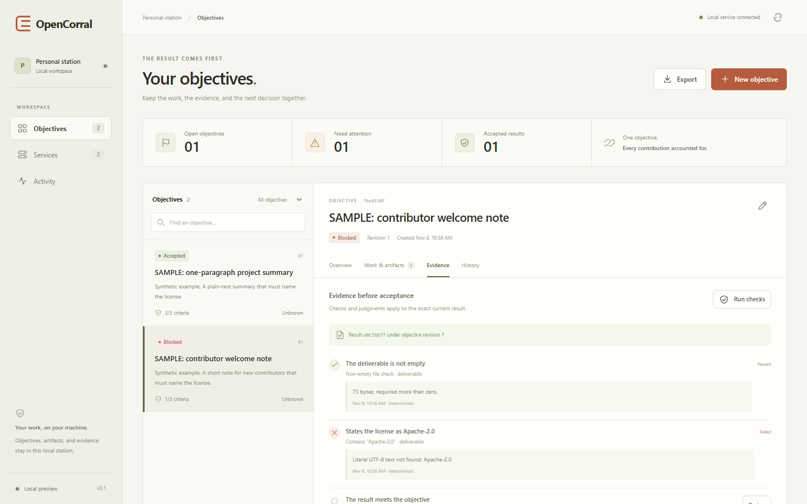
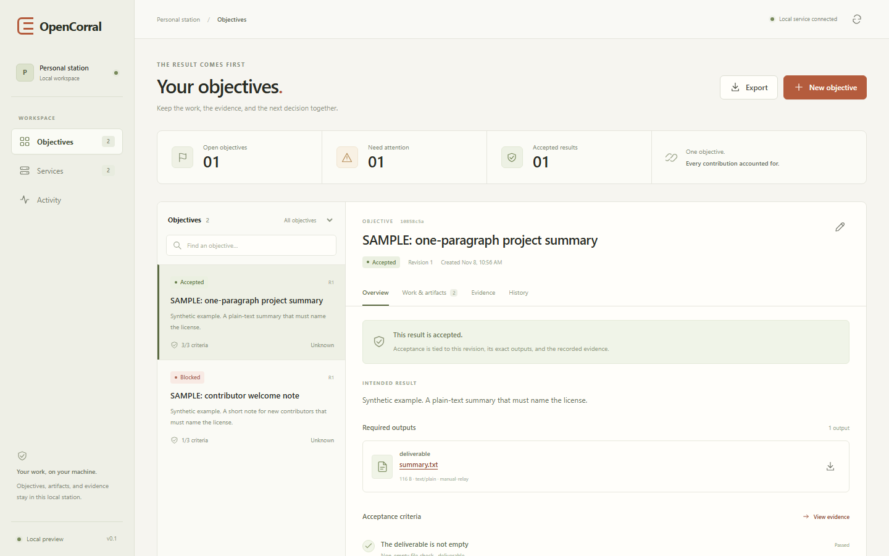

Open source · Runs on your machine
A corral for harnessed models.
OpenCorral holds your intended result above the harnesses and models doing the work. Every service's report is a claim until a check run in the corral, or your own judgment, confirms it.
Apache-2.0. A local station: your records, artifacts and evidence stay on your computer.

Why a corral.
In the steward's own words.
A workplace is a sea of intelligences, harnessed by their roles and interconnecting jobs, but not in a full architecture to accomplish long running team activities, because the idea of harnesses running while a corral directs the herd to the output spaces, without directing the horses individually is the brilliant bit.
Scott E. Frias, steward of OpenCorral
What runs today.
A working local preview of the first result loop. You bring the work in from the tools you already use; the station decides nothing on a service's say-so.
Objectives first
Each objective names its required outputs and the criteria that decide when it is done.
Any service, by relay
Register the harness and model pairings you use, and copy each work order to them yourself.
Exact deliverables
Every returned file is kept as exact bytes with a SHA-256 hash, so a result never changes under its evidence.
Checks and judgment
Deterministic checks run on the bytes; the judgments that need a person are recorded as yours.
Acceptance by evidence
Nothing is accepted until every required criterion passes for the current result. Superseded findings stay in history.
Honest costs, full export
Declared costs, where an unknown cost stays unknown, and the whole record exportable as JSON.
Not yet: launching agents, reading harness telemetry, checks the builder never sees, and routing work by measured results. Those are the next slices, and the roadmap says plainly what exists.
Evidence over claims.
In the project's first paired run, several harness and model pairings built the same real feature from the same starting point. Every build passed its own tests and the project's full verification. Hidden checks, whose contents no builder ever saw, still found a defect in three of the six builds, and one of those builds had already been through three rounds of blind review.
One task, one run. It shows why a report is a claim; it does not rank anyone.

Join the build.
We are looking for a first circle of developers who already run more than one coding harness on real work, build in TypeScript or Python, and reason from tests and evidence rather than from another model's review.
The work divides into parts you can own: adapters to the harnesses, the ledger and allotter, the grader, the station, and the Python instruments behind it.
What is offered today is credit in the commit history and the work itself. No paid work or equity is on offer; anything of that kind will be announced publicly and in writing before it exists.
First issues
- Slice S0Go and Rust validators for the payload conformance bench, so four independent engines agree
- Slice S0Faithful extraction of real harness records, every field's origin and every gap counted
- Slice S0A clean Windows install and packaging spike
- Slice S1Restore a station from its own exported record
- Slice S1Safe in-station previews for images and documents, never run as code
- Slice S2The first automated adapter, chosen by what each harness actually exposes
Every commit carries a Developer Certificate of Origin sign-off; you keep your copyright. New behavior comes with a test seen failing first, and a person approves every merge. More at opencorral.org.